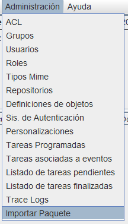
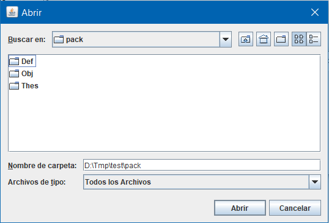
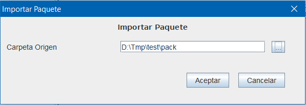

Para facilitar la configuración y movimiento entre entornos de "proyectos", en Openprodoc pueden prepararse paquetes de despliegue.
Debe entenderse "Proyectos" como un conjunto de definiciones de tipos documentales o de carpeta, Roles, Grupos, ACL, Tareas Programadas, Tareas de eventos,.. así como Tesauros de apoyo y árboles de carpetas conteniendo carpetas/fondos/expedientes y documentos de cualquiera de los tipos definidos previamente. El objetivo de esta función es preparar parametrizaciones para escenarios o usos específicos (centros de enseñanza, despachos profesionales, ONG, etc) y que puedan desplegarse entre entornos de una misma institución o en clientes tras realizar una labor de consultoría documental y parametrización de OpenProdoc.
Aunque todas las operaciones pueden realizarse por separado y de forma manual sin usar la opción de Paquete, la preparación de un paquete simplifica el trabajo y asegura la automatización, de forma que una vez probado en un entorno de pruebas, podrá importarse en el entornmo destino de forma automática.
Para ello deben realizarse los siguientes pasos:
El primer paso será crear las definiciones de tipos documentales o de carpeta, perfiles, grupos, tareas, etc. necesarias para poder trabajar en el tipo de institución o proceso en los que se utilizará OpenProdoc. Cualquier elemento que pueda definirse en las opciones de administración de OpenProdoc puede ser susceptible de incluirse en un paquete.
Además de las definiciones propiamente, para el manejo de tipos documentales o de carpeta habrá sido necesario crear tesauros que se asociarán a los metadatos de los tipos definidos, o en ocasiones simplemente se podran definir como ayuda y análisis, tal como se hace en las herramientas de manejo de tesauros. Estos tesauros deberán definirse y rellenarse con los términos, estructura y relaciones necesarios.
En ocasiones será necesario crear una estructura de carpetas (que refleje la estructura administrativa, geográfica, de fondos o series) o será necesario crear informes personalizados, ficheros de conmfiguración de Punto de Consulta o de Informes.
Todas esas carpetas y documentos necesarios deberán crearse y probarse en la instalación de desarrollo antes de crear el paquete. Esos elementos creados podrán estar basados en definiciones de tipos, o referenciar elementos de seguridad, previamente definidos, por lo que antes de trasladarlos al entorno destino, deberán existir esas definiciones en ese entorno, por lo que debe exportarse e importarse previamente.
Tras crear y probar todas las definiciones deberán exportarse una a una. Dado que unas definiciones pueden depender de otras (por ejemplo un ACL puede referenciar Grupos, un Tipo de Objeto puede referencia otro tipo padre, etc, es necesario indicar un orden de importación, para que cuando se importa un elemento, ya estén importados otros que requiere.
Este orden a aplicar será el orden alfabético de los nombres de ficheros. Para ello puede renombrarse los archivo; por ejemplo, incluirse un prefijo numérico delante del nombre del elemento exportado. Así por ejemplo, podrán renombrarse:
01_GrupoEmpleados.opd.Respecto a los Tesauros, deberán exportarse, utilizando formato SKOS, todos los tesauros utilizados en metadtos de los tipos de objetos, así como cualquier tesauro auxiliar que se considere útil). Cuando se importen deberá utilizarse la misma raiz, código numérico, idioma y nombre, para mantener la coherencia.
Las funciones anteriores pueden realizarse indistintamente con cualquier cliente (Web o Swing), sin embargo la exportación de carpetas, por volumen y tipo de contenido (árbol de carpetas conteniendo potencialmente cientos de ficheros) debe hacerse con el cliente Swing de OpenProdoc.
Deberá exportarse todas las estructuras de carpetas que se desee para reconstruir la configuración en destino. Debe tenerse en cuenta que la importación automática en destino se realizará desde la carpeta raíz.
Para la posterior importación, los elementos que compondrán el paquete deben agruparse en tres carpetas con los nombres predefinidos (incluidas mayúsculas y minusculas para evitar problemas en entornos Linux):
La importación se realizará en el orden indicado en la lista anterior:
Primero se importarán todos los tesauros incluidos en Thes, con los parámetros descritos en el fichero ListThes.csv (cuyo formato se describe más adelante.
Posteriormente se importarán, por orden alfabético todas las definiciones incluidas en Def. Tras la importación, las definiciones de tipos documentales y de carpetas crearán sus estructuras de datos (tablas).
Finalmente, se importarán todos los árboles de carpetas contenidos en Obj, recreando las estructuras, con sus tipos de objeto (previamente definidos en el paso anterior). Si una carpeta existe antes del aimportación, sus contenidos se sumarán.
El formato esperado para el fichero ListThes.csv es el siguiente:
Por ejemplo, el fichero podrá ser:
#-------------------------------------------------------------------------------------------------------------------------------------------Aunque generalmente una parametrización de OpenProdoc requerirá de todos los tipos de elementos, no es necesario que existan todos los elementos, es decir puede no incluirse definiciones, tesauros o árboles. Sin embargo deben incluirse siempre las tres carpetas contenedooras, así como el fichero de enumeración de tesauros, aunque estñe vacio.
Tras copiar la estructuras de carpetas a la instalación destino, utilizando igualmente el cliente Swing podra importarse el paquete, por medio de la opción de menú "Administración -> Importar Paquete". Esta opción presentará un formulario para elegir la carpeta que contiene las tres subcarpetas del paquete.



Si dentro de la subcarpeta ex del paquete de instalación de OpenProdoc se copian los subditrectorios que componen un paquete, la instalación de OpenProdoc al finalizar la creación de los elementos base, realizará autopmáticamente la instalación del paquete contenido.